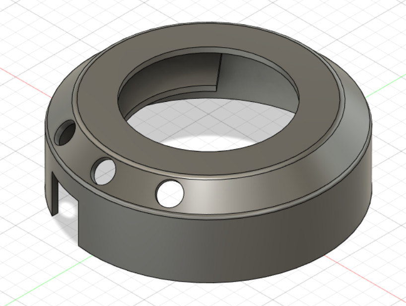

Planning of the final project
For the final projecct of this module, I decided to make a USB controlled volume adjustment knob. I got some inspiration from the link below in terms of the shape and the basic concept of the controller.
Where I got my idea from.I change the design a little by taking out the function in which the controller will pause and play music by pressing the knob once and i also took out the function where pressing the knob twice will move to the next song. Instead I added buttons to the side of the controller so that it can skip to the next song, go back to the previous song and pause and play the music.
The design of my controller is added below.

Bill of materials
The materials which is required for this project
- Alot of plastic.
- Abit of acrylic.
- Arduino Uno board x1
- Male to female wires
- Rotary encoder x1
CAD drawings
The first thing that I started making the CAD drawing of is the outer case as it will set out the measurements for the rest of the project. Since I want the controller to be portable, I tried to make it as compact as possible, with the diameter of the controller being only a few cm bigger then the length of the arduino board.
Next, I had to figure out how to keep the buttons and rotary encoder in place.This was done by adding a button holder and adding a removeable base to be put in the centre.